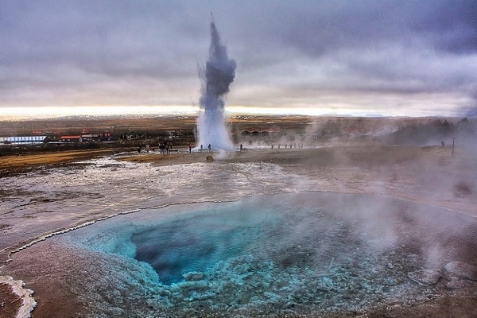

Главная страница | Италия | Норвегия | Япония
Исландия впервые начала формироваться примерно 70 миллионов лет назад. Полагают, что большой магматический карман, который сегодня расположен под островом, стал катализатором, который начал этот процесс. Этот магматический карман известен как «Исландский шлейф», его истоки, как полагают, лежат на глубине более 2000 метров внутри мантии Земли. Задолго до рассвета человечества этот шлейф вызвал ряд подводных извержений, которые быстро начали создавать остров, который мы знаем сегодня. Положение Исландии в середине Среднеатлантического Разлома делает его очагом геотермальной активности и по-прежнему является основной причиной того, почему Исландия имеет более 200 различных вулканов, гейзеров и вулканических трещин.

Вулканы Исландии |
|||||
|---|---|---|---|---|---|
Вулкан |
Последнее извержение |
||||
Эйяфьядлайёкюдль |
2010 |
||||
Хваннадальсхнукюр |
1728 |
||||
Аскья |
1963 |
||||
Гекла |
1964 |
||||
Лаки |
1783-1784 |
||||
Гримсвотн |
2011 |
||||
Катла |
1918 |
||||
Снайфедльс |
200 |
||||
Хердубрейд |
330 тыс. лет назад |
||||
Крафла |
1964 |
||||
Исландия относится к европейским странам и является островным государством. Располагается она на севере Атлантического океана, состоит из большого одноименного острова и многочисленных мелких островов. Столицей государства является Рейкьявик. Общая площадь Исландии 103 000 км квадратных. Почти вся территория страны представляет собой вулканическое плато, которое круто обрывается к океану и образует огромное количество фьордов. В Исландии много вулканов, здесь также есть гейзеры, горячие источники, ледники и лавовые поля.
Дословно Iceland переводится как «ледяная страна». В это легко поверить, взглянув на карту Исландии, 11% территории которой занимают ледники. Но, несмотря на это, в прибрежных регионах температура летом не падает ниже 11-13 °C. Зимой этот показатель опускается до -1 – 0°C. Средние же показатели на климатической карте Исландии не пересекают отметку в 0°C. По всей территории северного бастиона общегодовая температура колеблется в районе 4-5°C.
Осадки выпадают в большей степени в южной части Исландии, например, в городе Вик. В северной же части страны осадков появляется меньше всего. Западное побережье и Рейкьявик в том числе имеют, сравнительно, среднее количество осадков. На южных склонах самых высоких гор, осадки, которые почти всегда принимают форму снега, могут превышать 4000 мм в год.
Блюдо |
Описание |
Фотография |
|---|---|---|
Скир |
Традиционный исландский кисломолочный продукт называется скир. Им питались тысячу лет назад и до сих пор едят на завтрак или после полноценного обеда как десерт. |
|
Свид |
Главный исландский скот — бараны и овцы. Несколько веков назад жители острова не могли контактировать с другим миром и питались тем, что давала не слишком плодородная почва, вдобавок занимались скотоводством. Изолированность принуждала использовать все имеющиеся ресурсы и расходовать их разумно, тому пример блюдо из овечьей головы — свид. |
|
Кьетсупа |
Двадцать лет назад в Исландии начали строить геотермальные теплицы для выращивания, например, огурцов, томатов и паприки. Но век назад набор был скуднее: картошка, репа да морковь. Их нарезали в кастрюлю, заливали водой, добавляли любые куски ягнятины и кипятили на слабом огне по знакомому принципу «чем богаты, тем и рады». Такой мясной суп по-исландски называется «кьетсупа». Его до сих пор готовят в местных семьях, только теперь добавляя зелень и специи. |
Двадцать лет назад в Исландии начали строить геотермальные теплицы для выращивания, например, огурцов, томатов и паприки. Но век назад набор был скуднее: картошка, репа да морковь. Их нарезали в кастрюлю, заливали водой, добавляли любые куски ягнятины и кипятили на слабом огне по знакомому принципу «чем богаты, тем и рады». Такой мясной суп по-исландски называется «кьетсупа». Его до сих пор готовят в местных семьях, только теперь добавляя зелень и специи. |
Экскурсии в Исландии редко обходятся без посещения самого огромного, полноводного и прекрасного «золотого» водопада страны. Две ступени высотой в 11 метров и 21 метр, и глубина падения воды до 70 метров сделали эту достопримечательность одной из самых посещаемых и любимых туристами. Приехав сюда, вы сможете сделать уникальные фото. Месторасположение объекта не менее интересно - ледниковая река Хвитау.

Если вы не знаете, что посетить в Исландии в первую очередь, приезжайте посмотреть на знаменитые каньоны, долины и озера (в том числе, озеро Тингваллаватн) Национального парка. Природный объект, изрезанный вулканическими разломами, внесен в список Наследия ЮНЕСКО. Ни один обзор не сможет передать всю красоту этих мест.
Главные достопримечательности Исландии не только природные, но и исторические. Такие как шедевр архитектуры в стиле модерн - лютеранский собор Хадльгримскиркья. Огромная высота здания позволяет увидеть его из любой точки города Рейкявик.Но не ограничивайтесь поверхностным взглядом – лично посетите святилище, и насладитесь внушительным обликом церкви изнутри. Интерьер сооружения украшен традиционным нефом и огромными готическими окнами. Если вам повезет, вы сможете приобрести билет на теократизированные представления, поэтические вечера, концерты и другие светские мероприятия, проводимые тут помимо лютеранских обрядов.
Это название носят различные достопримечательности Исландии – и популярный геотермальный курорт, о котором слышал каждый турист в стране. И богатое минералами рукотворное озеро, называемое чудом природы.